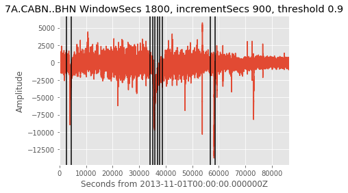

pycheron.metrics.DCOffSetTimesMetric¶
-
DCOffSetTimesMetric(st, windowSecs=1800, incrementSecs=None, threshold=0.9, generateMasks=False, masksByTime=True, logger=None, database=None)[source]¶ Metric to determine times of DC offsets (or where a shift in the signal mean is detected)
Parameters: - st (obspy.core.stream.Stream) – obspy stream object
- windowSecs (int) – Chunk size (secs) used in DCOffset calculations
- incrementSecs (int) – Increment (secs) for starttime of sequential chunks (DEFAULT = windowSecs/2)
- threshold (float) – Threshold used in the detection metric.
- generateMasks (bool) – If True, a boolean mask will be created for dc offset.
- masksByTime (bool) – Boolean to determine whether masks are generated by time. If True, masks will be generated with a start/end time, if false, they will be generated as boolean array.
- logger (pycheron.util.logger.Logger) – (logger object) - If using a logger, (you must create one using the util.logger class)
- database (pycheron.db.sqllite_db.Database) – database object
Returns: list of dictionaries containing the following keys and types:
- snclq (str)
- start_time (str)
- end_time (str)
- dc_offset_times (list)
- masks (list or numpy.ndarray)
- metric_name (str)
Return type: dict
Metric asserts: If difference in means between sequential chunks of seismic signal is greater than the typical std deviation of a chunk then this marks a DC offset shift
Algorithm steps:
- Break up signal into windowSecs chunks spaced incrementSecs apart
- For each chunk calculate: signal mean, signal std deviation
- Resulting mean and std dev arrays are of length 47 for 24 hours of signal
- Metric = abs(lagged difference of chunk means)/mean(chunk std devs)
- DC offset = times when metric > threshold
Examples
# Read in data data = 'test/test_data/7A_CABN_ALL.988887.tar.mseed' st = obspy.read(data) # Calculate DCOffSetTimesmetric d = DCOffSetTimesMetric(st,1800,None,0.9, True) # Convert BHE stream to trace object tr = st[1] print 'dcOffsetTimes for BHE channel:', d[1] >>> 'dcOffsetTimes for BHE channel:' {'metric_name': 'DCOffsetTimesMetric', 'dc_offset_times': [UTCDateTime(2013, 11, 1, 0, 45, 0, 25000), UTCDateTime(2013, 11, 1, 1, 15, 0, 25000), UTCDateTime(2013, 11, 1, 9, 30, 0, 25000), UTCDateTime(2013, 11, 1, 9, 45, 0, 25000), UTCDateTime(2013, 11, 1, 10, 0, 0, 25000), UTCDateTime(2013, 11, 1, 10, 15, 0, 25000), UTCDateTime(2013, 11, 1, 10, 30, 0, 25000), UTCDateTime(2013, 11, 1, 10, 45, 0, 25000), UTCDateTime(2013, 11, 1, 15, 45, 0, 25000), UTCDateTime(2013, 11, 1, 16, 15, 0, 25000)], 'snclq': u'7A.CABN..BHE.M', 'start_time': UTCDateTime(2013, 11, 1, 0, 0), 'masks': array([0, 0, 1, ..., 0, 0, 0]), 'end_time': UTCDateTime(2013, 11, 1, 23, 59, 59, 975000)}
# Plotting de = [] for i in d[1]['dc_offset_times']: de.append(timedelta.total_seconds(i.datetime-tr.stats.starttime.datetime)) plt.plot(tr.times(),tr.data) for i in de: plt.axvline(x=i,color='black') plt.xlabel('Seconds from %s' %str(tr.stats.starttime)) plt.xlim([min(tr.times()),max(tr.times())]) plt.ylabel('Amplitude') plt.title('%s WindowSecs 1800, incrementSecs 900, threshold 0.9'%str(tr.id)) plt.show()